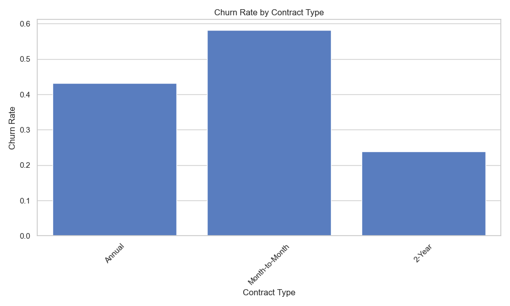
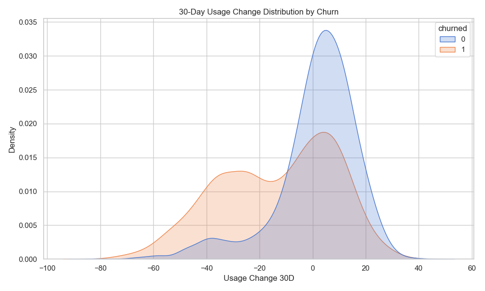
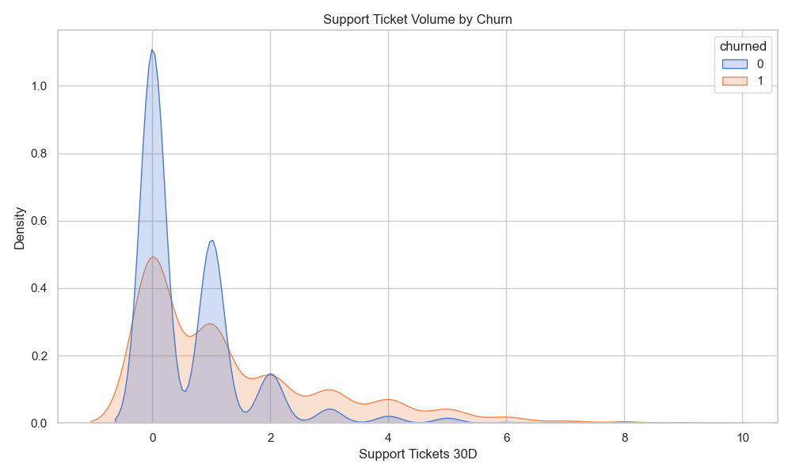
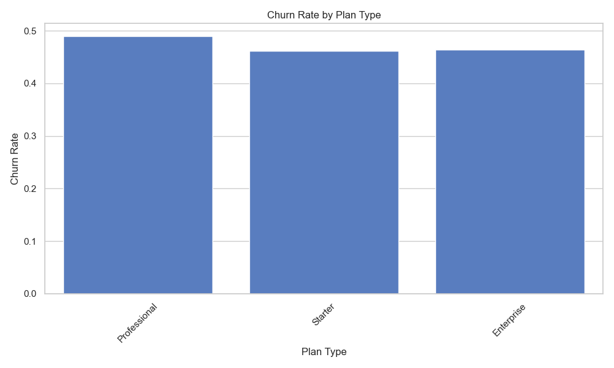
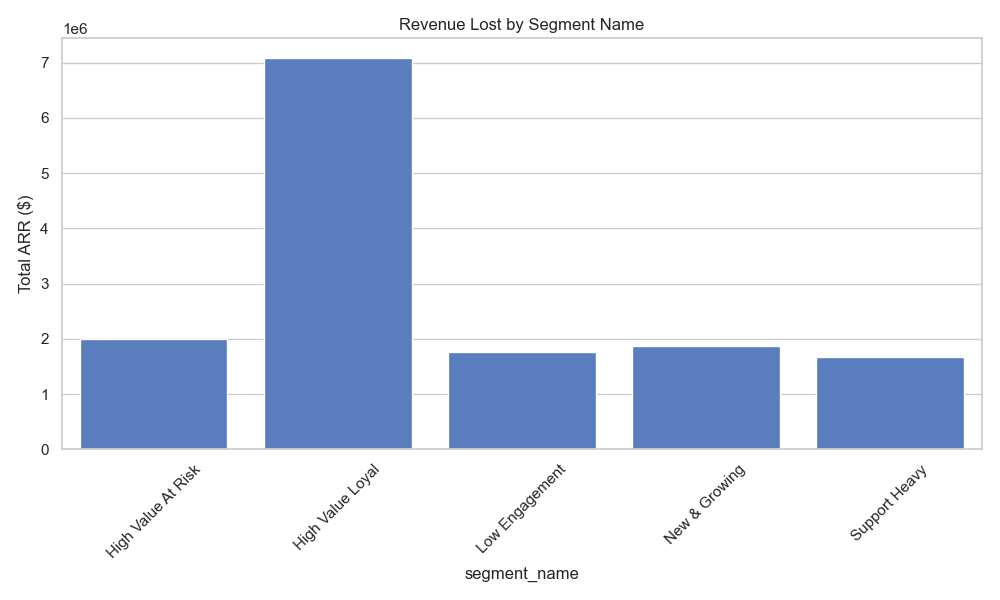
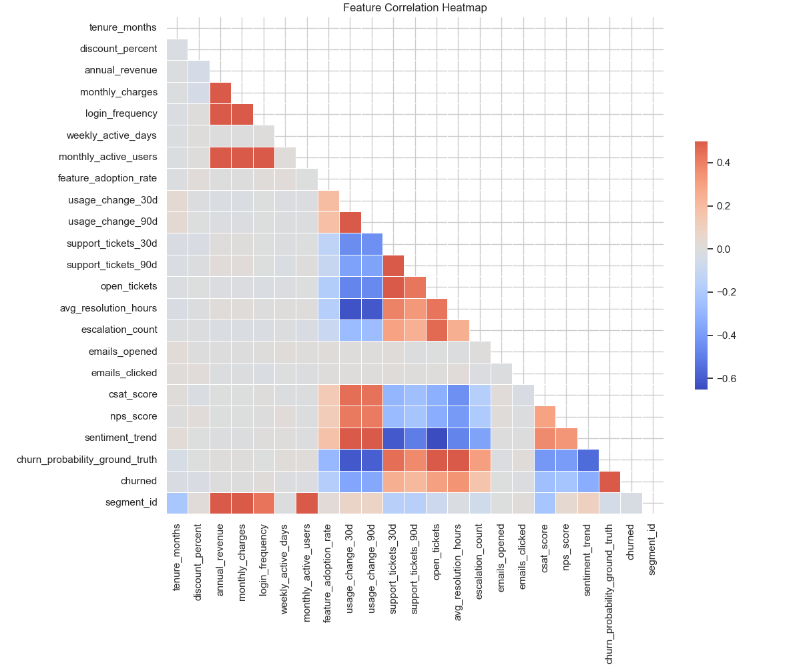

Total Customers
Overall Churn Rate
Total ARR
Lost ARR
Columns: 35
Missing Values:
Customers on Month-to-Month contracts exhibit significantly higher churn rates compared to Annual or 2-Year commitments.

A leading indicator of churn is the 30-day usage velocity. Customers who churn demonstrate a stark negative shift in usage leading up to cancellation.

Support ticket volume strongly correlates with churn. High ticket volume over a 30-day period precedes churn events.


This illustrates which segments account for the highest actual revenue loss due to churn.

The correlation heatmap highlights how our engineered features (like `usage_change_30d` and `customer_support_health_score`) interact with the target variable `churned`.
